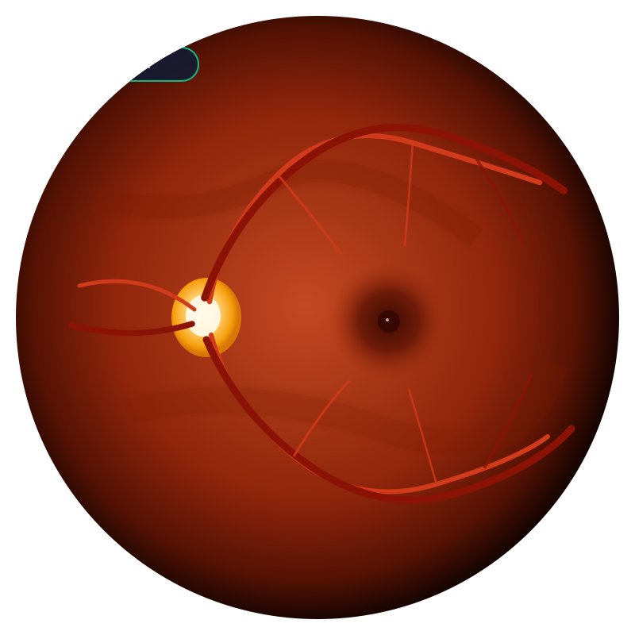
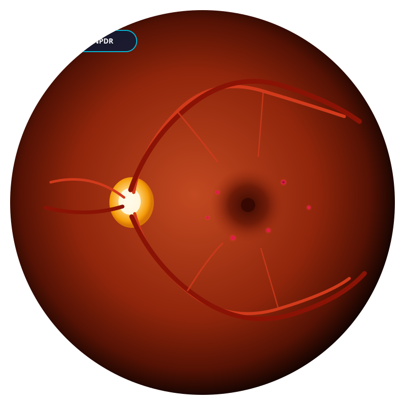
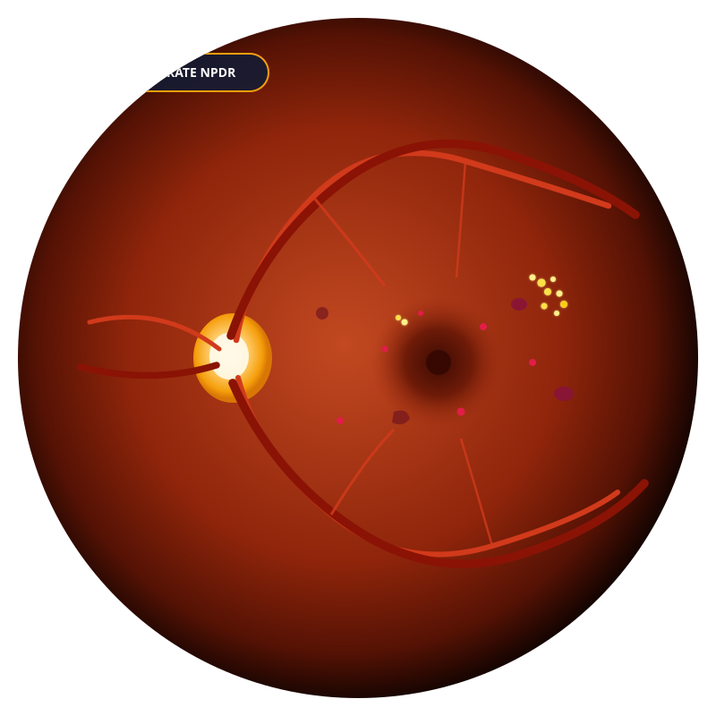
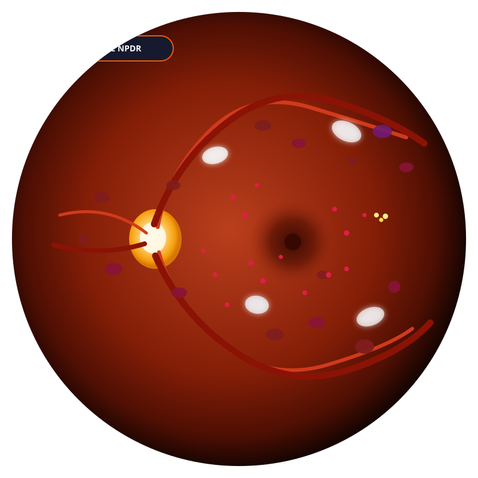
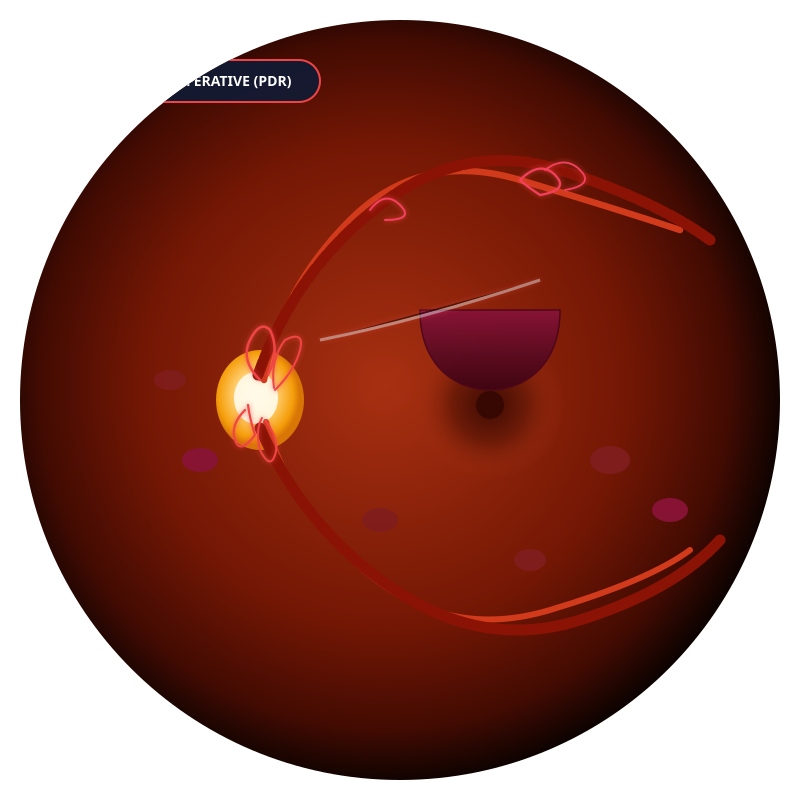

Disease Severity Distribution (ICDR Scale)
Active patient cohort stratified across 5 clinical stages
Patient progression
Latest same-eye comparison for each patient
Scan history statistics
Examinations counted from stored scan dates
Recent Patient Scans & Inference
Latest retinal fundus captures and automated AI grades
| Patient Name & ID | Eye (OD/OS) | DR Severity Stage | AI Confidence | Scan Date | Longitudinal Action |
|---|
Recent Clinical Activity
Latest stored examinations and same-eye status
Retinal Fundus Image Acquisition
Upload digital color fundus photograph or select benchmark case
Drag & Drop Retinal Image Here, or Browse Files
Accepts image files in this browser. DICOM and a trained model are not connected.

Normal (Stage 0)
Mild (Stage 1)
Moderate (Stage 2)
Severe (Stage 3)
PDR (Stage 4)Fundus Viewport & Lesion Saliency
High-resolution fundus inspection with Grad-CAM heatmap
Longitudinal Retinal Scan Comparison
Analyze microvascular changes, progression trajectories, and lesion delta
Longitudinal Progression Analysis
Significant microvascular deterioration detected. Patient advanced from Grade 1 (Mild NPDR) to Grade 3 (Severe NPDR) over a 12-month interval. Increased intraretinal blot hemorrhages and microvascular leakage observed.
Longitudinal Disease Progression Trajectory
Historical severity stage tracking across multiple consultations
Diabetic Retinopathy Cohort Directory
Active surveillance registry of screened patients
| Patient Name & ID | Age / Sex | Diabetes Type & HbA1c | Current DR Stage | Progression Status | Last Screening | Actions |
|---|
Robert Chen
DR-2026-894158 years old • Male • DOB: 1968-04-12
Clinical History & Notes: Poor glycemic control (HbA1c 9.2%). Reports blurred vision in Right Eye. Rapid disease progression.
Longitudinal Disease Trajectory
Consultation timeline vs ICDR stage evolution
Retinal Fundus Image Archive
Longitudinal fundus photographs acquired across previous visits
AI Prediction History & Confidence Log
Verifiable algorithmic audit trail
| Scan ID | Date | Eye | Assigned DR Grade | Confidence | Risk Tier |
|---|
Scan history
Every stored retinal examination, newest first. Progression is calculated against the previous scan of the same eye.
| Patient | Eye | Date | Severity | Confidence | Versus prior same eye | Action |
|---|
Population Retinopathy Stratification
Proportion of patients across ICDR disease stages
Scans by month
Counted from stored examination dates
What this build can measure
Registry figures only. Sensitivity, specificity, and AUC are not computed here.
No trained model file, MySQL database, or sign-in service is connected. Image grades are produced by the demonstration routine in assets/js/ai-engine.js. Uploaded photos that are not the built-in samples receive a weighted random grade, so those results are not clinical predictions.
Report loads from the selected patient record
Create account
Choose a password now. It is hashed before it is stored and is not shown again.
Accounts
Role changes and deactivation take effect on the next request.
| Person | Role | Status |
|---|
Audit log
Sign-ins, record changes, and account changes recorded by the server.
| When | Account | Action | Detail |
|---|
Stored AI results
Grades already saved with each scan. Nothing on this page invents a new prediction.
| Patient | Date | Eye | Stage | Confidence |
|---|
Platform & Model Parameters
These fields stay in this browser tab only. There is no settings server, model threshold, or PACS connection.